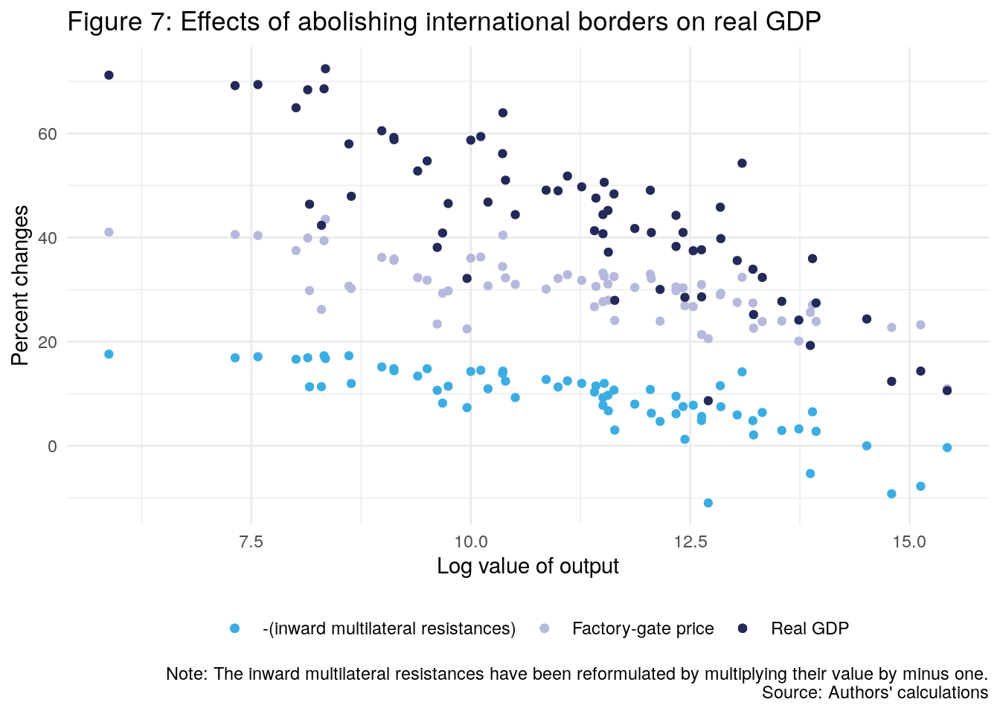

Chapter 3 General equilibrium trade policy analysis with structural gravity
3.1 Trade without borders
3.1.1 Initial data
Unlike the previous chapter, we shall proceed by alternating both data transforming and regressions. In the previous chapter it was possible to first process the datasets and then fit the regressions, but here we need the regressions’ output in order to create new variables. In any case we will follow quite similar steps to the last chapter.
To do what is shown in box #1 from page 104 in Yotov et al. (2016), we need to convert “DEU” in both exporter and importer columns to “0-DEU”. We could have used “AAA”, the book uses “ZZZ” but in R “ZZZ” won’t be treated as the reference factor. It is important to mention that box #1 doesn’t show a previous step that is mentioned in page 103, which is to filter and keep observations for the year 2006 only.
ch2_application1 <- yotov_data("ch2_application1") %>%
filter(year == 2006) %>%
mutate(
log_dist = log(dist),
intl = ifelse(exporter != importer, 1, 0),
exporter = ifelse(exporter == "DEU", "0-DEU", exporter),
importer = ifelse(importer == "DEU", "0-DEU", importer)
) %>%
# Create Yit
group_by(exporter, year) %>%
mutate(y = sum(trade)) %>%
# Create Eit
group_by(importer, year) %>%
mutate(e = sum(trade)) %>%
# Create Er
ungroup() %>%
mutate(e_r = max(ifelse(importer == "0-DEU", e, NA), na.rm = T))3.1.2 Step I: Solve the baseline model
We start by fitting the next model:
\[ \begin{align} X_{ij,t} =& \:\exp\left[\pi_{i,t} + \chi_{i,t} + \beta_1 \log(DIST)_{i,j} + \beta_2 CNTG_{i,j} + \beta_3 INTL_{i,j}\right] \times \varepsilon_{ij,t} \end{align} \]
With the data from above, the model specification is straightforward:
fit_baseline <- glm(
trade ~ 0 + log_dist + cntg + intl + exporter + importer,
family = quasipoisson(link = "log"),
data = ch2_application1
)For now, we will concentrate on the fitted values and shall ignore the clustered standard errors in the next paragraphs, but still we can show the robust estimation by using the yotov_robust_glm() function:
##
## z test of coefficients:
##
## Estimate Std. Error z value Pr(>|z|)
## log_dist -0.791288 0.062781 -12.6040 < 2.2e-16 ***
## cntg 0.673646 0.139803 4.8185 1.446e-06 ***
## intl -2.474450 0.149266 -16.5775 < 2.2e-16 ***
## ---
## Signif. codes: 0 '***' 0.001 '**' 0.01 '*' 0.05 '.' 0.1 ' ' 1With the estimated model, we can proceed as in box #1 from page 105 in Yotov et al. (2016) in order to construct the variables for export and import fixed effects:
## Joining, by = c("exporter", "importer")Still following box #1, we need to compute the variables of bilateral trade costs and multilateral resistances:
ch2_application1 <- ch2_application1 %>%
mutate(
tij_bln = exp(fit_baseline$coefficients["log_dist"] * log_dist +
fit_baseline$coefficients["cntg"] * cntg +
fit_baseline$coefficients["intl"] * intl),
# outward multilateral resistance (omr)
omr_bln = y * (e_r / exp(fe_exporter)),
# inward multilateral resistance (imr)
imr_bln = e / (exp(fe_importer) * e_r)
)To complete this stage of the estimation, we need to create a column with the estimated international trade for given output and expenditures. We start by adding a column, tradehat_bln, with the regression output, and then we group by exporter and summarise to obtain the required column xi_bln:
3.1.3 Step II: Define a counterfactual scenario
Box #2 from page 105 in Yotov et al. (2016) proposes two alternatives to define counterfactual scenario of removing international borders.
The first alternative is to eliminate the border variable and then generate the logged trade costs used in the constraint:
ch2_application1 <- ch2_application1 %>%
mutate(
tij_cfl = exp(fit_baseline$coefficients["log_dist"] * log_dist +
fit_baseline$coefficients["cntg"] * cntg),
log_tij_cfl = log(tij_cfl)
)The second alternative is to define a new counterfactual border variable:
3.1.4 Step III: Solve the counterfactual model
We need to fit a model similar to the model from step I, the constrained gravity model, where \(\pi_{j,t}\) and \(\chi_{j,t}\) are altered:
\[ \begin{align} X_{ij,t} =& \:\exp\left[\pi_{i,t}^{CFL} + \chi_{i,t}^{CFL} + \beta_1 \log(DIST)_{i,j} + \beta_2 CNTG_{i,j} + \beta_3 INTL_{i,j}\right] \times \varepsilon_{ij,t} \end{align} \]
Box #1 from page 106 in Yotov et al. (2016) estimates the constrained gravity model with the PPML estimator by using an offset argument, and this is straightforward in R:
fit_counterfactual <- glm(
trade ~ 0 + exporter + importer + offset(log_tij_cfl),
family = quasipoisson(link = "log"),
data = ch2_application1
)Unlike step I, to construct the variables for export and import fixed effects, we’ll obtain the variables fe_exporter.x and fe_exporter.y because we already added an fe_exporter column to the dataset after obtaining the baseline model.
dplyr is wise enough to rename the two fe_exporter columns (the same applies to the imports) but we need to specify that we want to join by exporter and importer instead of all columns with shared names. In any case, it is better to rename those columns and provide informative names:
ch2_application1 <- ch2_application1 %>%
left_join(
yotov_fixed_effects(fit_counterfactual),
by = c("exporter", "importer")
) %>%
rename(
fe_exporter_bln = fe_exporter.x,
fe_exporter_cfl = fe_exporter.y,
fe_importer_bln = fe_importer.x,
fe_importer_cfl = fe_importer.y
)Now we go for Box #2 from page 106 in Yotov et al. (2016) where the variables of bilateral trade costs and multilateral resistances are obtained:
ch2_application1 <- ch2_application1 %>%
mutate(
# outward multilateral resistance (omr)
omr_cfl = y * (e_r / exp(fe_exporter_cfl)),
# inward multilateral resistance (imr)
imr_cfl = e / (exp(fe_importer_cfl) * e_r)
)Box #2 also shows how to compute the conditional general equilibrium effects of trade. This is very similar to what we did in step I:
ch2_application1 <- ch2_application1 %>%
mutate(tradehat_cfl = fit_counterfactual$fitted.values) %>%
group_by(exporter) %>%
mutate(xi_cfl = sum(tradehat_cfl * (exporter != importer))) %>%
ungroup()Box #1 from page 107 in Yotov et al. (2016) can be considerably simplified with R code. To construct the iterative procedure to converge to full endowment general equilibrium effects, we start by creating the required columns and parameters, so we will deviate from the original approach.
We start computing change in bilateral trade costs (change_tij) and trade deficit or surplus (phi):
# set the criteria of convergence
# taken from the literature (see the Stata code)
sigma <- 7
ch2_application1 <- ch2_application1 %>%
mutate(
change_tij = tij_cfl / tij_bln,
phi = ifelse(importer == exporter, e / y, 0)
) %>%
group_by(exporter) %>%
mutate(phi = max(phi)) %>%
ungroup()Now we compute change in prices for exporters (change_p_i) and importers (change_p_j):
ch2_application1 <- ch2_application1 %>%
group_by(exporter) %>%
mutate(change_p_i = ((exp(fe_exporter_cfl) / e_r) / (exp(fe_exporter_bln) / e_r))^(1 /(1 - sigma))) %>%
ungroup() %>%
group_by(importer) %>%
mutate(
change_p_j = ifelse(importer == exporter, change_p_i, 0),
change_p_j = max(change_p_j)
) %>%
ungroup()Next, we need to compute the counterfactual trade flows (trade_cfl):
To conclude the steps from Box #1 we need a while() loop and iterate until a convergence is reached.
We need to duplicate some columns under new names for the loop operations, because we will overwrite them when using the iterative steps:
ch2_application1 <- ch2_application1 %>%
mutate(
omr_cfl_0 = omr_cfl,
imr_cfl_0 = imr_cfl,
change_imr_full_0 = 1,
change_omr_full_0 = 1,
change_p_i_0 = change_p_i,
change_p_j_0 = change_p_j,
fe_exporter_cfl_0 = fe_exporter_cfl,
fe_importer_cfl_0 = fe_importer_cfl,
tradehat_0 = tradehat_cfl,
e_r_cfl_0 = e_r
)And now we run the loop, which cannot be divided into smaller pieces because the step \(N\) depends on the step \(N-1\):
# set parameters
max_dif <- 1
sd_dif <- 1
change_price_i_old <- 0
while(sd_dif > 1e-5 | max_dif > 1e-5) {
ch2_application1 <- ch2_application1 %>%
mutate(trade_1 = tradehat_0 * change_p_i_0 * change_p_j_0 / (change_omr_full_0 * change_imr_full_0))
# repeat the counterfactual model
fit_counterfactual_2 <- glm(
trade_1 ~ 0 + exporter + importer + offset(log_tij_cfl),
family = quasipoisson(link = "log"),
data = ch2_application1
)
ch2_application1 <- ch2_application1 %>%
left_join(
yotov_fixed_effects(fit_counterfactual_2),
by = c("exporter", "importer")
)
# compute the conditional general equilibrium effects of trade
ch2_application1 <- ch2_application1 %>%
mutate(tradehat_1 = fit_counterfactual_2$fitted.values) %>%
group_by(exporter) %>%
mutate(y_cfl_1 = sum(tradehat_1)) %>%
ungroup() %>%
mutate(e_cfl_1 = ifelse(importer == exporter, phi * y_cfl_1, 0)) %>%
group_by(importer) %>%
mutate(e_cfl_1 = max(e_cfl_1)) %>%
ungroup() %>%
mutate(
e_r_cfl_1 = ifelse(importer == "0-DEU", e_cfl_1, 0),
e_r_cfl_1 = max(e_r_cfl_1)
)
# compute the change in prices for exporters and importers
ch2_application1 <- ch2_application1 %>%
mutate(change_p_i_1 = ((exp(fe_exporter) / e_r_cfl_1) /
(exp(fe_exporter_cfl_0) / e_r_cfl_0))^(1 / (1 - sigma)))
# compute the change in prices for exporters and importers
ch2_application1 <- ch2_application1 %>%
group_by(importer) %>%
mutate(
change_p_j_1 = ifelse(importer == exporter, change_p_i_1, 0),
change_p_j_1 = max(change_p_j_1)
) %>%
ungroup()
# compute both outward and inward multilateral resistance
ch2_application1 <- ch2_application1 %>%
mutate(
omr_cfl_1 = (y_cfl_1 * e_r_cfl_1) / exp(fe_exporter),
imr_cfl_1 = e_cfl_1 / (exp(fe_importer) * e_r_cfl_1)
)
# update the differences
max_dif <- abs(max(ch2_application1$change_p_i_0 - change_price_i_old))
sd_dif <- sd(ch2_application1$change_p_i_0 - change_price_i_old)
change_price_i_old <- ch2_application1$change_p_i_0
# compute changes in outward and inward multilateral resistance
ch2_application1 <- ch2_application1 %>%
mutate(
change_omr_full_1 = omr_cfl_1 / omr_cfl_0,
change_imr_full_1 = imr_cfl_1 / imr_cfl_0,
omr_cfl_0 = omr_cfl_1,
imr_cfl_0 = imr_cfl_1,
change_omr_full_0 = change_omr_full_1,
change_imr_full_0 = change_imr_full_1,
change_p_i_0 = change_p_i_1,
change_p_j_0 = change_p_j_1,
fe_exp_cfl_0 = fe_exporter,
fe_imp_cfl_0 = fe_importer,
tradehat_0 = tradehat_1,
e_r_cfl_0 = e_r_cfl_1
) %>%
select(-fe_exporter, -fe_importer)
}Box #1 from page 108 in Yotov et al. (2016) shows the steps to obtain different endowments, which can be divided into smaller pieces.
We start computing the full endowment general equilibrium of factory-gate price (change_p_i_full and change_p_j_full) and the full endowment general equilibrium of output (y_full):
ch2_application1 <- ch2_application1 %>%
mutate(
change_p_i_full = ((exp(fe_exporter_cfl_0) / e_r_cfl_0) /
(exp(fe_exporter_bln) / e_r))^(1 / (1 - sigma)),
change_p_j_full = change_p_i_full * (exporter == importer)
) %>%
group_by(importer) %>%
mutate(change_p_j_full = max(change_p_j_full)) %>%
ungroup() %>%
mutate(y_full = change_p_i_full * y)Now we compute the full endowment general equilibrium of aggregate expenditures (e_full and e_full_r):
ch2_application1 <- ch2_application1 %>%
mutate(e_full = change_p_j_full * e * (exporter == importer)) %>%
group_by(importer) %>%
mutate(e_full = max(e_full, na.rm = TRUE)) %>%
ungroup() %>%
mutate(
e_full_r = e_full * (importer == "0-DEU"),
e_full_r = max(e_full_r)
)With the aggregate expenditure we proceed to obtain the full endowment general equilibrium of the outward multilateral resistance (omr_full) and inward multilateral resistance (imr_full):
ch2_application1 <- ch2_application1 %>%
mutate(
omr_full = y_full * e_r_cfl_0 / exp(fe_exporter_cfl_0),
imr_full = e_full / (exp(fe_importer_cfl_0) * e_full_r)
)Finally we proceed to compute the full endowment general equilibrium of trade (xi_full):
3.1.5 Step IV: Collect, construct, and report indexes of interest
Box #1 from page 108 in Yotov et al. (2016) consists in to construct the percentage change of the general equilibrium indexes. The steps are direct, we need to compute the change in full endowment general equilibrium factory-gate price on export side (change_price_full), the change in conditional and full general equilibrium outward multilateral resistances (change_omr_*), and the change in conditional and full general equilibrium international trade (change_xi_*):
ch2_application1 <- ch2_application1 %>%
mutate(
change_price_full = (change_p_i_full - 1) * 100,
change_omr_cfl = (omr_cfl^(1 / (1 - sigma)) / omr_bln^(1 / (1 - sigma)) - 1) * 100,
change_omr_full = (omr_full^(1 / (1 - sigma)) / omr_bln^(1 / (1 - sigma)) - 1) * 100,
change_xi_cfl = (xi_cfl / xi_bln - 1) * 100,
change_xi_full = (xi_full / xi_bln - 1) * 100
)In addition to this, we need to something very similar for importers, in order to be able to recreate figure 7 later:
3.1.6 Figures replication
With all of the steps above, we are ready to create the plots from page 110. in Yotov et al. (2016).
Figure 6 removes the observations where both the importer and the exporter are different, this can be seen in the original Stata code provided with the book.
We need to filter rows and to obtain log(y):
ch2_application1 <- ch2_application1 %>%
filter(exporter == importer) %>%
select(exporter, importer, y, change_xi_cfl, change_xi_full, rgdp,
change_price_full, change_imr_full) %>%
mutate(log_y = log(y))In addition, the original code removes Hong Kong for visualization scale purposes:
ggplot(data = ch2_application1 %>%
filter(exporter != "HKG")) +
geom_point(aes(x = log_y, y = change_xi_cfl, color = "1")) +
geom_point(aes(x = log_y, y = change_xi_full, color = "2")) +
labs(
x = "Log value of output",
y = "Percent change of exports",
title = "Figure 6: Effects of abolishing international borders on exports",
caption = "Source: Authors' calculations",
color = ""
) +
theme_minimal() +
theme(legend.position = "bottom") +
scale_color_manual(
labels = c(
"Conditional general equilibrium",
"Full endowment general equilibrium"
),
values = c("#b6b8dd","#232958")
)To create figure 7, we proceed in the same way as we did with figure 6:
ggplot(data = ch2_application1 %>% filter(exporter != "HKG")) +
geom_point(aes(x = log_y, y = change_imr_full, color = "1")) +
geom_point(aes(x = log_y, y = change_price_full, color = "2")) +
geom_point(aes(x = log_y, y = rgdp, color = "3")) +
labs(
x = "Log value of output",
y = "Percent changes",
title = "Figure 7: Effects of abolishing international borders on real GDP",
caption = "Note: The inward multilateral resistances have been reformulated by multiplying their value by minus one.\nSource: Authors' calculations",
color = ""
) +
theme_minimal() +
theme(legend.position = "bottom") +
scale_color_manual(
labels = c(
"-(inward multilateral resistances)",
"Factory-gate price",
"Real GDP"
),
values = c("#3bade3", "#b6b8dd", "#232958")
)
References
Yotov, Yoto V, Roberta Piermartini, José-Antonio Monteiro, and Mario Larch. 2016. An Advanced Guide to Trade Policy Analysis: The Structural Gravity Model. World Trade Organization Geneva.